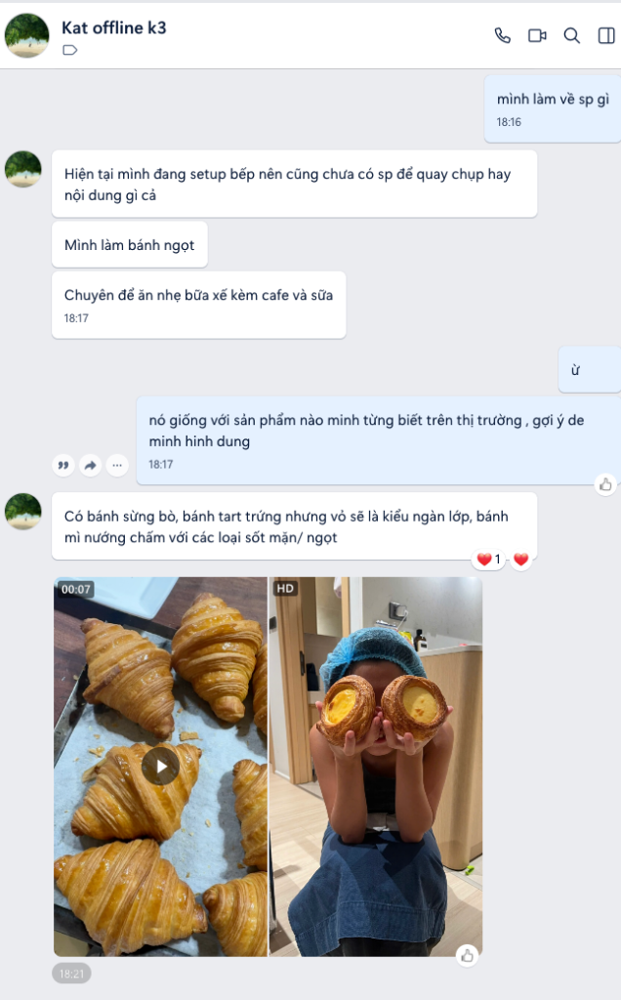

CASE CHỊ KAT: TIỆM BÁNH NGỌT BỮA XẾ & CƠ CHẾ 70/30 PRE-OPENING
Giải phẫu toàn diện hồ sơ học viên Kat Lynn (SĐT: 0904545611). Bẻ gãy ảo tưởng "chưa có sản phẩm thì chưa làm kênh" bằng cơ chế 70% B-Roll lao động thật lúc setup bếp + 30% nhát cắt chuyên môn Woodsmall. Xây dựng vị thế thợ thạo nghề đàng hoàng cho tệp khách ăn xế văn phòng & gia đình.

Hồ Sơ Thực Địa Đã Đối Soát (100% Khớp CSDL)
Học viên: Kat Lynn (Zalo: Kat offline k3)
Số điện thoại: 0904545611 • Đã cọc Offline K3 (19-20/09/2026)
Sản phẩm cốt lõi: Bánh sừng bò (Croissant) ngàn lớp, bánh tart trứng vỏ ngàn lớp, bánh mì nướng sốt mặn/ngọt.
Định vị: Đồ ăn nhẹ bữa xế chiều (14h - 17h) kèm cafe và sữa tươi.
Hiện trạng: Đang setup bếp, chưa mở bán chính thức. Bếp đang ngổn ngang thiết bị.
Lời Đúc Kết & 4 Câu Lục Bát Thực Chiến
Khách hàng mua một chiếc bánh ngọt ăn xế 15-20 nghìn ở tiệm ven đường: họ chỉ cần ngọt để chống đói tức thời. Nhưng khi một người phụ nữ kỹ tính chọn set bánh xế cho con, hoặc một văn phòng đặt tiệc trà tiếp đối tác với giá 50-80 nghìn/chiếc bánh thủ công: họ không mua vì câu từ "ngon chuẩn Pháp" hay "làm từ tâm". Họ mua vì thấy một người thợ trung thực dám tự tay phế bỏ mẻ bánh lỗi, dám nói thật về bơ động vật và bảo bọc thể diện cho họ.
Nhìn thớ bột nở biết người thạo tay.
Bơ tươi ngàn lớp xếp dày,
Bữa xế thanh ngọt, trọn ngày an tâm.”
Giải phẫu: Bếp đang dựng biến hiện trạng setup thành lợi thế BTS độc bản. Người thạo tay khẳng định tay nghề Woodsmall. Bơ tươi ngàn lớp kiên định dùng bơ động vật, khước từ shortening công nghiệp. Trọn ngày an tâm giải tỏa triệt để nỗi sợ bánh ngọt gắt, đầy bụng của dân văn phòng.
Bộ Lọc Ngôn Từ Mộc Mạc Chuẩn Anh Việt
Lọc bỏ hoàn toàn các từ ngữ tiếp thị sáo rỗng, đưa ngôn ngữ thợ lò về chuẩn mộc mạc:
| ❌ Ngôn từ sách vở / Marketing sáo rỗng | ✅ Ngôn từ mộc mạc chuẩn anh Việt |
|---|---|
| BỎ Bánh làm từ tâm / Gửi trọn yêu thương vào từng mẻ bánh | DÙNG Cân chuẩn từng gram bột gram bơ, sai lệch nhiệt độ lò 5 độ là tự tay bỏ mẻ bánh |
| BỎ Nguyên liệu nhập khẩu cao cấp chuẩn vị Pháp 100% | DÙNG Chỉ dùng bơ động vật nguyên chất thơm ngậy tự nhiên, không pha bơ phe hay shortening để giữ phom giả |
| BỎ Công thức độc quyền triệu đô / Đỉnh cao nghệ thuật bánh | DÙNG Cách làm rất tới của người đứng lò, kiểm soát nhiệt độ phòng dưới 22°C để bơ không chảy dầu |
| BỎ Phễu chuyển đổi / Bùng nổ doanh số nghìn đơn F&B | DÙNG Bán đúng lượng mẻ nướng mỗi sáng, phục vụ đúng những người sành ăn đặt trước cho bữa xế |
| BỎ Gồng lên làm Pastry Chef quốc tế / Chuyên gia ẩm thực | DÙNG Chị thợ làm bánh đội mũ trùm đầu y tế, đeo tạp dề dính vệt bột, chia sẻ chân thành mộc mạc |
Bóc Tách Hiện Trường Xưởng Bánh Đang Setup
Tầng 1: Lời Đãi Bôi Ngoài Thị Trường (Ai Cũng Nói, Không Ai Nhớ)
"Bánh tươi mỗi ngày", "Không chất bảo quản", "Vỏ giòn rụm thơm ngon"... Những câu nói đãi bôi vô thưởng vô phạt khiến người xem lướt qua trong 1 giây vì não bộ tự động gạt bỏ thông tin không có chi phí xác thực.
Tầng 2: Bề Mặt Đời Thực (Khó Khăn Nhìn Thấy Bằng Mắt)
Bếp đang setup ngổn ngang hộp gỗ, dây điện; trời nồm ẩm miền Bắc làm bơ cán bị chảy nhão dính chặt vào bàn đá; mẻ bánh nướng thử bị xẹp ruột; bị khách so sánh giá với bánh ngọt 15k ngoài siêu thị; áp lực tiền thuê mặt bằng và chi phí máy móc thiết bị tiền trăm triệu.
Tầng 2.5: Thể Diện Giấu Kín Của Khách Bữa Xế (Mỏ Vàng Chuyển Hóa)
Chiếc mặt nạ thể diện: Muốn set bánh xế bày ra đĩa phải nở phồng vàng óng, sang trọng, tinh tế để chụp hình check-in hoặc nở mày nở mặt với đối tác và đồng nghiệp.
Nỗi sợ giấu kín: Sợ bánh giao đến bị xẹp lép, ỉu xìu, bốc mùi dầu mỡ công nghiệp làm mất hết thể diện người đặt; sợ ăn vào ngọt gắt khé cổ họng khiến buổi chiều làm việc mệt mỏi, đầy hơi.
• Nhóm Phụ Huynh Mua Bánh Bữa Xế Cho Con:
Nỗi sợ giấu kín: Sợ phẩm màu, hương liệu tổng hợp và mỡ trừu công nghiệp (trans fat) làm con ho đờm, dậy thì sớm hoặc béo phì. Họ sẵn sàng trả gấp đôi tiền để mua sự an tâm tuyệt đối về đường tiêu hóa của con.
Cơ Chế 70/30 & Định Luật Woodsmall Bắt Bệnh 5 Giây
1. Cơ Chế 70/30 (Google 7-11-4 — Tích Lũy 7 Giờ Tiếp Xúc Trong Lúc Setup):
• 70% B-Roll Lao Động Thật (Behind-The-Scenes - Không Diễn): Đặt máy quay góc bếp quay cảnh chị Kat bóc thùng máy cán bột mới toanh; dùng cồn y tế khử trùng mặt bàn đá granite; đo nhiệt độ bơ khối lúc sáng sớm; quét dọn mùn cưa; ngồi tựa mép bàn đá nhấp ngụm cafe nhìn lò nướng thử. Khách hàng xem video này cảm nhận rõ sự chuẩn bị kỹ lưỡng, tâm huyết của chủ tiệm và tích lũy đủ 7 giờ quen mặt trước ngày khai trương.
• 30% Walk & Talk / Nhát Cắt Chuyên Môn (Woodsmall): Những pha cắt đôi croissant chỉ vào ruột bánh chẩn đoán lỗi nhiệt, bẻ viền bánh tart trứng nghe tiếng vỡ giòn tan, quệt muỗng sốt chấm mặn ngọt giải thích vì sao không dùng chất làm đặc.
2. Định Luật Woodsmall: "Bắt Bệnh 5 Giây Như Bác Sĩ Cầm Dao Mổ":
- Bắt bệnh ruột croissant đặc: Cắt đôi bánh: "Ruột croissant nở phồng bên ngoài nhưng cắt ra bên trong bết dính như bánh mì đặc ruột... lỗi không phải do men nở yếu, mà do lúc cán bột nhiệt độ phòng quá 22°C làm bơ tan chảy ngấm vào bột thay vì tạo thành hàng trăm lớp lá chắn".
- Bắt bệnh vỏ tart trứng bị chai: Cầm chiếc tart lên: "Vỏ tart trứng cắn vào bị cứng đơ thay vì giòn xốp ngàn lớp... là do bạn đã nhồi bột quá tay làm sợi gluten phát triển quá mức".
3. Đóng Gói Thị Giác — Chiếc Hộp Nhung Của Tiệm Bánh Ăn Xế:
• Âm thanh ASMR mộc: Tiếng rạch dao gợn sóng qua lớp vỏ croissant rôm rốp giòn tan; tiếng bột rơi xào xạc; tiếng quạt đối lưu lò nướng rì rào; tiếng sữa tươi rót vào ly cafe đá sánh mịn.
• Góc máy Macro cận cảnh: Lớp vỏ ngàn lớp tách tầng mỏng như cánh chuồn chuồn; lớp custard tart trứng núng nính ánh vàng; vệt sốt mặn ngọt bóng bẩy quết lên thớ bánh mì nướng giòn rụm.
• Tác phong người thợ: Mũ bọc tóc y tế, tạp dề sạch sẽ, bàn đá bóng loáng (như ảnh thực tế) xóa tan hoàn toàn nỗi lo an toàn vệ sinh thực phẩm.
Bảng 4 Mẫu Kịch Bản Quay Chuyển Đổi Thực Chiến
Mẫu 1: 70% Đời Sống / Pre-opening — Bếp Chưa Khai Trương & Thử Lò Lúc 5h Sáng
| 📹 HÌNH ẢNH B-ROLL (LAO ĐỘNG THẬT) | 🎙️ LỜI THOẠI CHỊ KAT (VOICE-OVER MỘC MẠC) |
|---|---|
|
• Cam A (Toàn): Góc xưởng đang hoàn thiện, bàn đá phủ nylon, thợ điện lắp bóng đèn vàng. Chị Kat bật công tắc lò nướng mới. • Cam B (Macro/ASMR): Tiếng rây bột mì xào xạc xuống mặt bàn đá granite mát lạnh. • Cam B (Cận cảnh): Khay bánh croissant nở căng phồng trong lò kính, bơ sôi lăn tăn nhẹ ở chân bánh. • Cam A (Trung): Chị Kat đội mũ bọc tóc y tế, mặc tạp dề, ngồi tựa mép bàn đá nhấp ngụm cafe sữa nhìn khay bánh. |
"Mấy hôm nay tiệm đang dựng dở, bụi bặm ngổn ngang, nhiều người đi qua hỏi: 'Bếp chưa mở cửa sao ngày nào cũng thấy sáng đèn từ 5 giờ sáng thế?'. Dạ, làm bánh ăn xế nhìn thảnh thơi vậy thôi chứ đỏng đảnh lắm. Lò nướng mới về, chỉ cần nhiệt trên nhiệt dưới lệch nhau 5 độ C là thớ croissant nướng ra đã hỏng hoàn toàn. Cả tuần nay em nướng thử, canh chỉnh từng mẻ bột, từng độ lạnh của bơ. Em muốn ngày mở cửa đón mẻ khách đầu tiên, chiếc bánh giao đến tay mọi người cho bữa xế phải là chiếc bánh chuẩn nhất, vỏ giòn tan và thơm lừng mùi bơ tươi." |
Mẫu 2: 30% Woodsmall — Cắt Đôi Croissant Bắt Bệnh Ruột Bánh Bết Dầu
| 📹 HÌNH ẢNH B-ROLL (LAO ĐỘNG THẬT) | 🎙️ LỜI THOẠI CHỊ KAT (WALK & TALK THỰC TẾ) |
|---|---|
|
• Cam B (Macro): Lưỡi dao gợn sóng cắt đôi chiếc bánh sừng bò, nghe tiếng vỏ vỡ 'rôm rốp'. Mặt cắt lộ ra ruột bánh đặc quánh, bết dầu. • Cam A (Trung): Chị Kat cầm nửa chiếc bánh chỉ tay vào mảng ruột bết, giải thích điềm tĩnh. • Cam B (Đối chứng): Cắt đôi chiếc croissant chuẩn: ruột bánh mở rộng thành mạng lưới tổ ong (honeycomb) mỏng manh, đều tăm tắp. • Cam B: Cận cảnh khối bơ động vật cán xen kẽ lớp bột trắng mịn. |
"Bạn cắt đôi chiếc croissant ra mà thấy ruột bánh bết dính như bột sống, đáy bánh đọng một lớp dầu bóng nhẫy... thì đừng vội đổ lỗi cho men nở hay bột mì. Lỗi này nằm ở nhiệt độ phòng cán bột vượt quá 22 độ C. Bơ bị chảy dầu, thay vì tạo thành hàng trăm lớp lá chắn xen kẽ bột, nó ngấm thẳng vào thớ bột làm mất hoàn toàn cấu trúc tổ ong. Làm bánh ngàn lớp là cuộc đua với nhiệt độ và thời gian. Bơ phải luôn giữ ở độ dẻo lạnh 16-18 độ. Thao tác tay phải nhanh và dứt khoát. Người thợ thạo nghề hơn nhau ở chỗ kiên nhẫn kiểm soát từng độ lửa, từng độ lạnh này." |
Mẫu 3: Costly Signaling — Từ Chối Đơn Bánh Xế Giao Gấp 30 Phút
| 📹 HÌNH ẢNH B-ROLL (LAO ĐỘNG THẬT) | 🎙️ LỜI THOẠI CHỊ KAT (MỘC MẠC) |
|---|---|
|
• Cam A: Màn hình điện thoại hiện tin nhắn Zalo: 'Em ơi ship gấp cho văn phòng chị 10 set croissant và tart trứng trong 30 phút nữa tiếp khách, chị trả thêm phụ phí gấp rưỡi cũng được'. Chị Kat bấm gọi điện thoại giải thích. • Cam B (Macro): Cận cảnh xếp từng chiếc tart trứng vỏ ngàn lớp vàng ươm vào hộp giấy kraft tinh tươm. • Cam B: Cận cảnh chiếc bánh vội nướng ép nhiệt bị chảy xẹp nhũn nếu giao ngoài trời gió. • Cam A: Chị Kat cắm một bình hoa nhỏ đặt lên quầy bar tiệm bánh. |
"Hôm nay có một chị khách cần gấp 10 set bánh xế cho cuộc họp đột xuất của công ty sau 30 phút nữa, sẵn sàng trả thêm phụ phí, nhưng em đành xin phép từ chối. Nếu dùng đế bánh công nghiệp trữ đông sẵn và bơ thực vật pha phụ gia chống chảy, em nướng vội 15 phút là giao ngay, bỏ túi tiền triệu dễ ợt. Nhưng tiệm em chỉ dùng bơ động vật tươi nguyên chất cán tay mỗi sáng, bánh cần nướng đủ nhiệt và ổn định vỏ giòn. Em thà mang tiếng khó tính mất một đơn hàng, còn hơn để mang đến văn phòng chị những chiếc bánh ỉu xìu, làm mất thể diện của chị trước mặt đối tác quan trọng." |
Mẫu 4: Tầng 2.5 Thể Diện — Đừng Đem Chiếc Bánh Ngọt Gắt Ho Khé Cổ Đãi Mọi Người
| 📹 HÌNH ẢNH B-ROLL (LAO ĐỘNG THẬT) | 🎙️ LỜI THOẠI CHỊ KAT (MỘC MẠC) |
|---|---|
|
• Cam B (Macro): Thao tác rưới dòng sốt mặn ngọt đặc chế lên miếng bánh mì nướng giòn rụm, khói bốc nhẹ. • Cam A (Trung): Chị Kat tháo găng tay, chia sẻ với nụ cười chân thành. • Cam B (ASMR): Tiếng cắn miếng bánh tart trứng nghe tiếng vỡ vụn giòn rụm của hàng trăm lớp vỏ, nhân custard mềm mịn bên trong không hề bị khô. • Cam A: Set bánh xế đặt cạnh ly cafe sữa tươi nguyên chất tinh tươm trên bàn gỗ. |
"Nhiều bạn đi làm văn phòng hay được giao nhiệm vụ đặt đồ ăn xế cho cả phòng. Chiếc bánh mang đến mà ngọt gắt khé cổ họng, cắn vào thấy ngấy tận óc toàn mùi bơ phe công nghiệp... thì người đặt vừa ngượng, đồng nghiệp ăn xong vừa đầy bụng vừa mệt mỏi cả buổi chiều. Bữa xế đúng nghĩa phải là lúc nạp lại năng lượng: vỏ bánh ngàn lớp giòn tan thơm bơ tự nhiên, nhân tart trứng béo thanh ngọt dịu, chấm thêm chút sốt mặn ngọt ăn kèm ly cafe sữa mát lành. Ăn xong thấy người nhẹ nhõm, thảnh thơi để tiếp tục làm việc. Đó là lý do tiệm em không bao giờ chạy theo độ ngọt công nghiệp để lừa vị giác." |
Khung Sản Xuất 1 Máy Quay Gọn Nhẹ Tại Bếp (70/30)
Chỉ cần 1 điện thoại + 1 chân máy đặt góc bàn đá granite, chị Kat vừa setup/làm bánh vừa ghi hình:
| Thứ | Định dạng & Tỷ lệ | Thao tác vi mô & ASMR | Mục tiêu tiếp xúc |
|---|---|---|---|
| Thứ 2 | 70% Đời sống BTS | Mở cửa bếp 5h sáng, rây bột mì xào xạc, uống cafe bên khay nướng thử | Khởi đầu tuần mới, cho thấy nếp sống chăm chỉ, tỉ mỉ |
| Thứ 3 | 30% Woodsmall vi mô | Cắt đôi croissant bắt bệnh ruột bánh tổ ong bị bết dầu (Cam B macro) | Khẳng định tay nghề bậc thầy, định vị thợ thạo việc |
| Thứ 4 | Hộp nhung thị giác (ASMR) | Dao cắt bánh rôm rốp, rưới sốt mặn/ngọt sánh mịn lên bánh mì nướng | Kích thích vị giác mãnh liệt, hút đơn ăn xế B2C |
| Thứ 5 | 70% Đời sống thực địa | Khử trùng bàn đá granite, lau khuôn nhôm bóng loáng lúc 9h tối | Chứng minh quy chuẩn an toàn vệ sinh không tì vết |
| Thứ 6 | Tình huống Chịu thiệt | Từ chối đơn bánh gấp 30 phút vì không nướng ép bánh đông lạnh | Costly Signaling: Bảo vệ thể diện và sức khỏe cho khách |
| Thứ 7 | Chạm Tầng 2.5 tâm lý | Bóc tách nỗi sợ bánh ngọt gắt ho khé cổ, giải pháp bữa xế thanh nhẹ | Giải tỏa chỗ khó nói của người đặt đồ ăn xế văn phòng |
| Chủ nhật | Lắng nghe & Nghiên cứu | Ngồi thử nghiệm công thức sốt chấm mới, đọc phản hồi của khách | Tương tác 2 chiều, thu thập chất liệu cho tuần mới |
3 Nguyên Tắc Sống Còn Của Tiệm Bánh Bữa Xế
1. Tuyệt Đối Không Dùng Shortening / Bơ Pha Để Giữ Phom Bánh Giả
Bơ động vật nguyên chất dễ chảy dầu nếu trời nóng, đòi hỏi kỹ thuật cao, nhưng đổi lại là mùi thơm tự nhiên và tan chảy trên đầu lưỡi. Không vì giảm chi phí hay tiện lợi mà dùng mỡ trừu làm nặng bụng và ho đờm khách hàng.
2. Dám Tự Tay Đổ Bỏ Mẻ Bánh Lỗi Trước Ống Kính
Một mẻ croissant cán bột bị chảy dầu bết ruột, một khay tart trứng nướng quá nhiệt hay vỏ bánh bị xẹp dứt khoát không bao giờ được đóng hộp giao cho khách. Sự khắt khe với chính mình là tấm danh thiếp uy tín nhất.
3. Bảo Bọc Thể Diện & Sức Khỏe Cho Người Thưởng Thức
Người đặt bánh xế muốn sang trọng để nở mày nở mặt với văn phòng nhưng sợ bánh ỉu xìu; người mẹ mua bánh cho con sợ hóa chất độc hại. Luôn nói trúng nỗi sợ đó và đứng về phía họ. Khi thể diện và sức khỏe được bảo bọc, họ sẽ trở thành khách quen trọn đời.
Vì Sao Khách Hàng Sẵn Sàng Trả Giá Cao Cho Sự Thật?
Vì sao khách hàng sẵn sàng trả 50-80 nghìn cho chiếc bánh xế của chị Kat thay vì mua bánh công nghiệp rẻ tiền ngoài phố? Sinh học tiến hóa giải thích qua cơ chế Tín Hiệu Đắt Giá (Costly Signaling):
Bất kỳ tiệm bánh nào cũng có thể dán nhãn "Bánh sạch từ tâm, nguyên liệu nhập Pháp". Đó là Cheap Talk – những lời nói không có chi phí xác thực. Não bộ con người sau hàng vạn năm tiến hóa đã phát triển cơ chế hoài nghi sinh học (Deception Detection) để phòng tránh bị lừa. Mọi lời quảng cáo đãi bôi đều bị tự động gạt bỏ.
2. Kích Hoạt Tín Hiệu Bằng Sự Tự Chịu Thiệt (Skin-In-The-Game):
Khi chị Kat dám từ chối một đơn hàng gấp tiền triệu vì không đủ thời gian ủ bánh tự nhiên, hoặc dám đổ bỏ khay bánh nướng lệch nhiệt trước ống kính, chị đã phát ra một Costly Signal cực mạnh. Kẻ bán hàng chộp giật không bao giờ dám từ chối tiền nóng hay đổ bỏ sản phẩm lỗi vì chi phí quá đắt đỏ.
3. Dỡ Bỏ Khiên Phòng Thủ & Chuyển Giao Trọn Vẹn Niềm Tin:
Hành động tự chịu thiệt chứng minh một sự thật sinh học: "Người thợ này đặt sự an toàn và thể diện của tôi cao hơn lợi nhuận trước mắt của họ". Khi đó, chiếc khiên phòng thủ trong não khách hàng tự động hạ xuống hoàn toàn. Khách không còn so bì giá 15k hay 50k, an tâm thưởng thức và tự hào giới thiệu cho cả văn phòng, gia đình.